大家好，欢迎大家来到coding迪斯尼.本节代码可在如下链接下载：
http://pan.baidu.com/s/1jHqNGjk
或是网易云课堂视频所在附件。
阅读博客的朋友可以到我的网易云课堂中，通过视频的方式查看代码的调试和执行过程：
http://study.163.com/course/courseMain.htm?courseId=1002830012
继上一节我们介绍了一些概念后，这两节，我们致力用代码将概念实现，本节我们要开发的是，用有限状态机来识别整形和浮点型数值，下面是我们有限状态机的结构图：
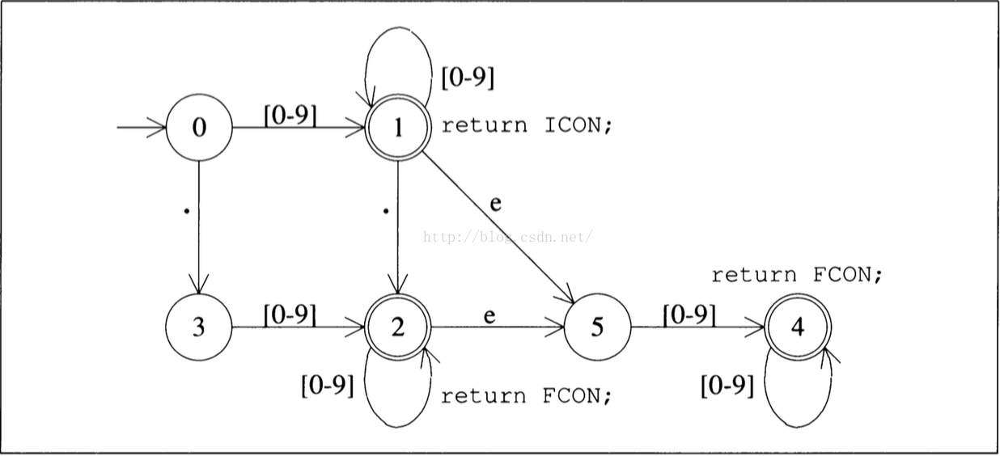
ICON表示状态机进入了识别整形数的状态，FCON表示状态机进入了浮点数的识别状态，状态机一开始处于0，如果输入是：1234，那么当把字符1送入状态机时，状态从0转换为1，进入状态1时，状态机处于接受状态，接下来字符2，3，4继续进入状态机，在状态1接收到数字时，状态机任然由状态1 持续进入状态1，当所有数字识别结束后，状态机返回ICON标志，表明识别的字符串是整形数字。
如果输入是3.14，从状态0开始，字符3进入状态机后，机器进入状态1，第二个字符 . ,使得状态机从1转到2，此时2是接收状态，后面的字符1，4进入后，根据上图，机器一直从状态2中自转，当所有字符都输入机器后，机器返回FCON,表明3.14是浮点数。
这里要提的是，状态机还接收字符e, e是科学计数法来表示数值，例如3.1e4 表示3.14 乘以10 的4次幂。只要数值中带有符号e, 机器都将识别为浮点数。
状态机在程序中的表现形式,在代码设计中，我们用二维数值来表示上图的状态机: fmsTable[6][128].
其中行数6表示0-5 六个状态。128对应输入输入的ASCII码值，例如符号0的ASCII 值就是48, fmsTable[0][48] 的值是1，表示状态机从状态0，接收到字符 0 之后进入状态1. ASCII的字符总数是256，其中0-128之间的字符才是键盘上可输入的字符，所以数组只用应对前128种字符输入就可以了。由于在128种输入中，只有有限的几个字符是我们需要考虑的，也就是字符0-9, “.”, “e”, 因此二维表中，对应于他们的列才有有效数据，其他列都初始化为-1. 因此这个二维表是一个非常稀疏的矩阵：
0 1 2 3 ……39(.)…….48(1) 49(2)…..101(e) …….
0 -1 -1 -1……………3……………1 1 ………….-1……………
1 -1 -1 -1……………2…………….1 1……………2……………
2
3
4
5
我简单将二维数组的内容展示了一下，大家可以看到其中很多地方的数值都是-1.显然，这种存储方式空间浪费比较严重，后面我会跟大家讨论改进的方法。
程序的代码结构：

TableFMS.java 用来实现状态机的二维数组表示，FMS.java是状态机的接口定义，FiniteStateMachine.java 用来实现状态机的识别逻辑。由于本程序需要使用上节实现的输入系统处理输入流程，因此程序还需要引用上一个项目：
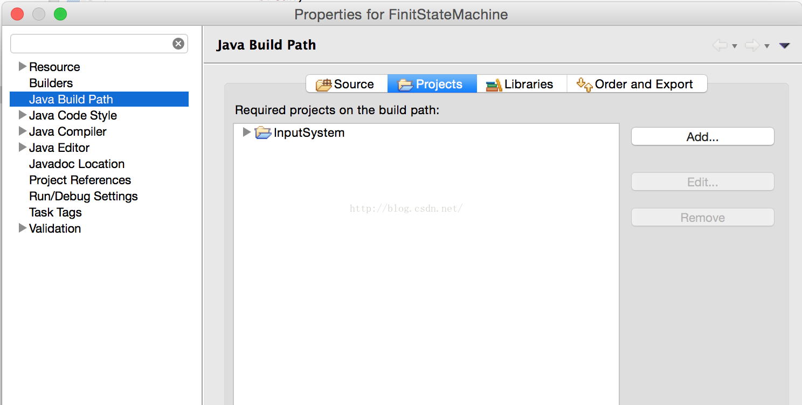
这两个项目我会一起打包放在附件中，大家可以在视频的附件链接中获取全部代码。
代码解读：
我们先看FMS.java
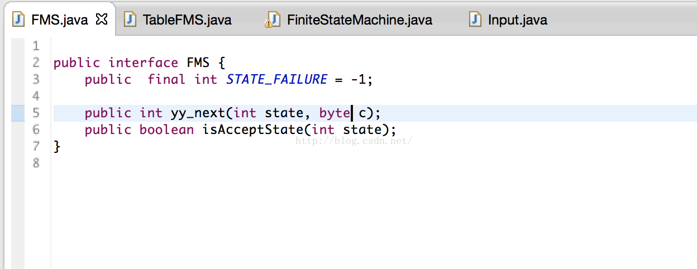
它的内容简单，就是状态机接口定义，STATE_FAILURE 表示上面所说的二维数组中的-1，即无效或失败状态。yy_next 就是上节所说的状态转换函数，给定当前状态和输入字符，该函数返回下一个状态的数值。isAcceptState用来判断，给定状态是否是接受状态。
接下来看看TableFMS.java 它是状态机的具体实现：
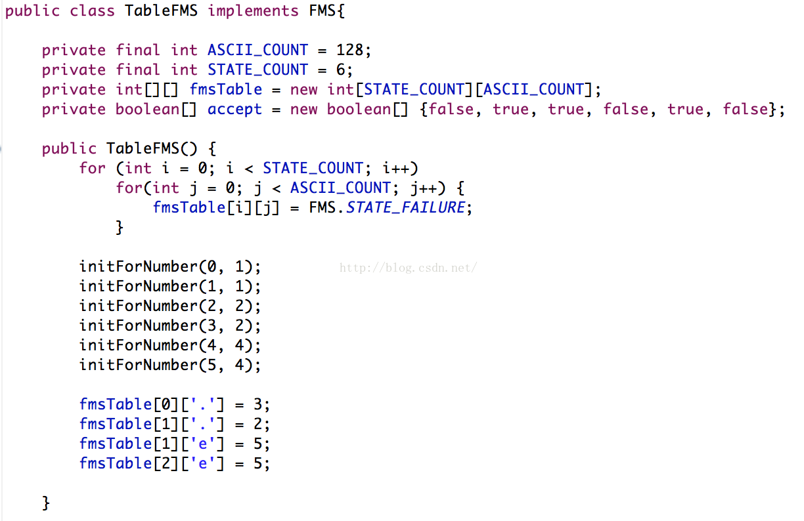首先是一些常量定义STATE_COUNT 是状态机的状态数，ASCII_COUNT是状态机要处理的输入符号数量。fmsTable 用来描述上面所说的状态机及其转换关系。
在构造函数中将二维数组构造成上面所说的稀疏矩阵。看看initForNumber的实现：
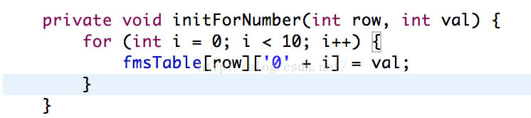
当调用initForNumber(0, 1) 后，二维数组被初始化为
fmsTable[0][‘1’] = 1, fmsTable[0][‘2] = 1,…… fmsTable[0][‘9’] = 1;
也就是设置状态0，对输入是数字字符‘0’到’9’时，转换到状态1，对initForNumber的其他调用以此类推，fmsTable[0][‘,’] = 3 表示在状态0时如果输入字符是‘.’ ，那么跳转到状态3，以下的同理。
初始化后，数组内容如下：
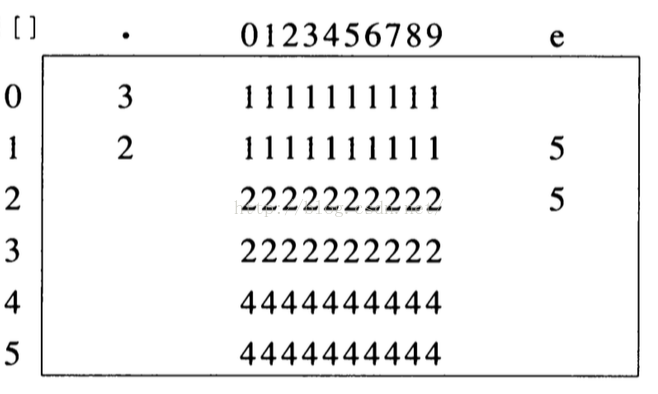它与开头的状态转换图是一致的。
接下来是状态转换函数的实现：
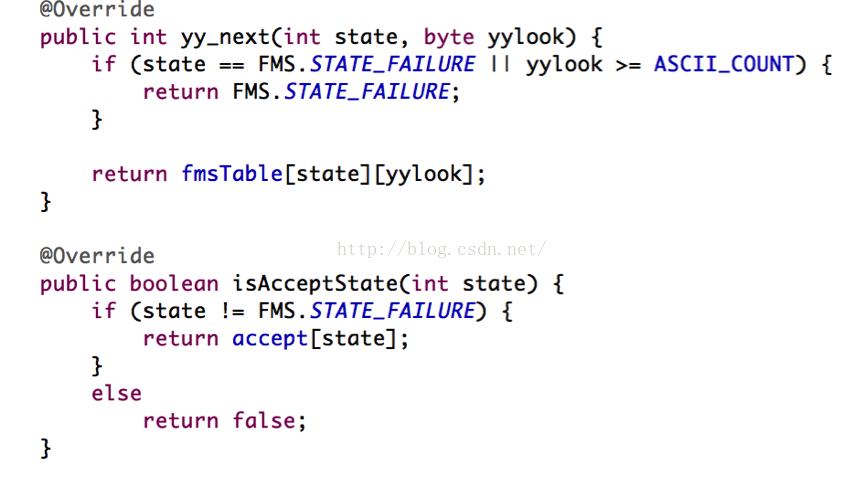
state 是指状态机的状态，yylook是输入字符的ASCII编码，yy_next根据输入的状态和给定字符，通过二维表返回在给定状态下，接收给定字符后机器将跳转到哪个状态。
isAcceptState 用于返回给定状态是否是接收状态。
FiniteStateMachine.java 是状态机识别逻辑的具体实现：
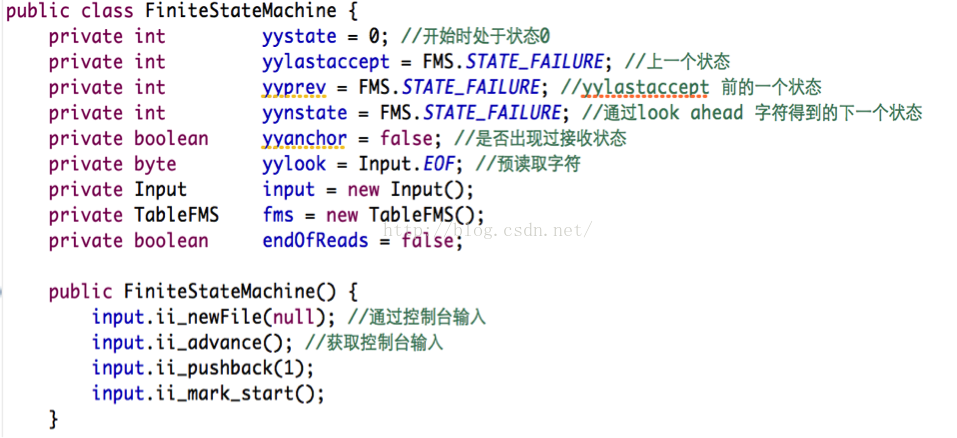在初始化函数中，ii_newFile 指示输入系统从控制台读取信息，ii_advance将控制台的信息读入缓冲区，由于ii_advance会将缓冲区中,Next指针处的字符读取出来，但是在初始化中，我们无法处理读取的字符，因此调用ii_pushback把读出的字符重新放回缓冲区。
yylex()是识别过程的主逻辑：
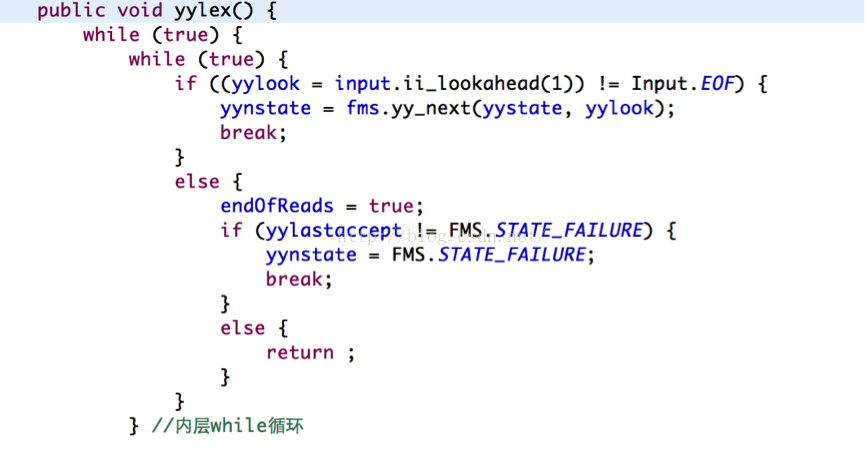首先通过ii_lookahead在缓冲区中预读取一个要处理的字符，把读取的字符赋值给yylook, 如果读到的字符不是结束标识符的话(EOF end of file). 那么调用yy_next这个状态跳转函数，获取状态机要跳转的下一个状态，并赋值给yynstate.
再往下看：
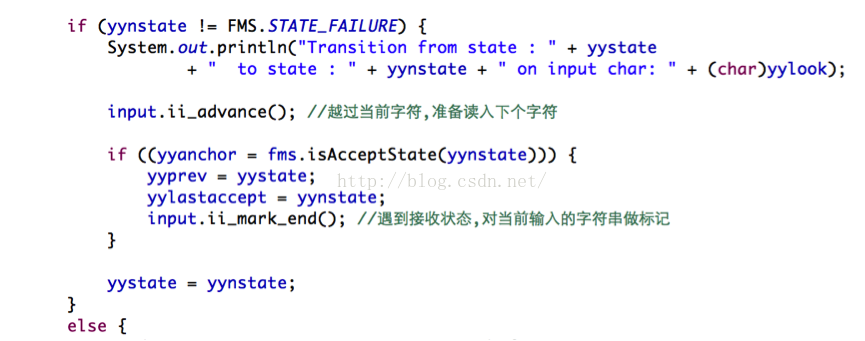如果跳转的状态是有效状态的话，那么打印出相关跳转信息，ii_advance 让输入系统准备输出下一个字符，如果跳转后的状态是接收状态的话，要做一些标记。
如果跳转的状态是错误状态的话，也就是yy_next返回-1: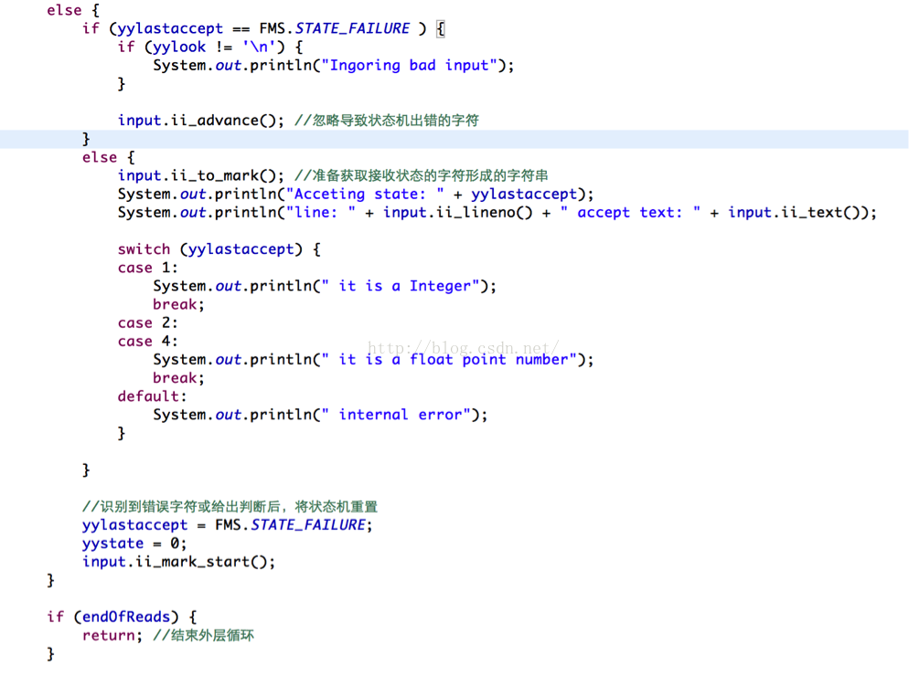
如果读入的字符不是换行符(在控制台中，如果输入两个字符串，例如1234然后点回车，再输入另一个字符串3.14，那么1234和3.14之间会有一个换行符’\n’)
那就表明输入的字符串中，含有除了数字，点号’.’ 和字符e之外的字符，那么就打印出错信息，并通过调研ii_advance越过非法字符。如果在出错前状态机进入过接收状态，那么程序将打印出使状态机进入接收状态的字符串。例如如果输入是123x4, x是非法字符，根据上面逻辑，程序将输出123 it is a Integer.
接下来的main函数将驱动起整个状态机程序：
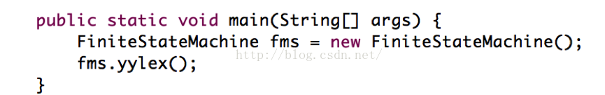
大家走到这应该对整个程序的理解还是比较模糊，接下来跟着视频，我将程序的运行过程给大家展示一下，大家会清楚很多。
阅读博客的朋友可以到我的网易云课堂中，通过视频的方式查看代码的调试和执行过程.